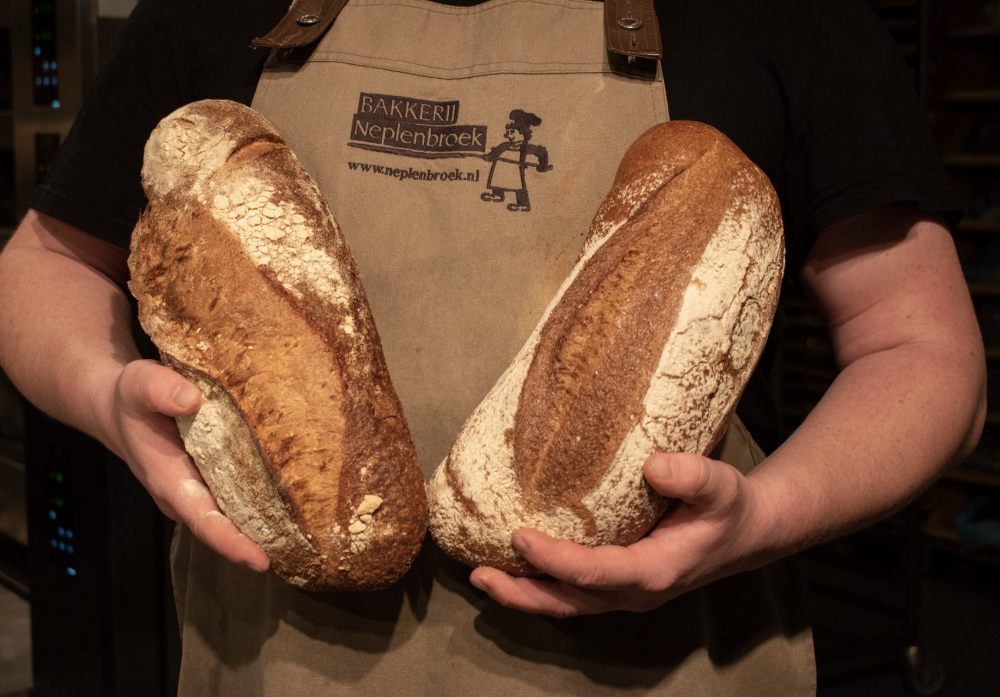
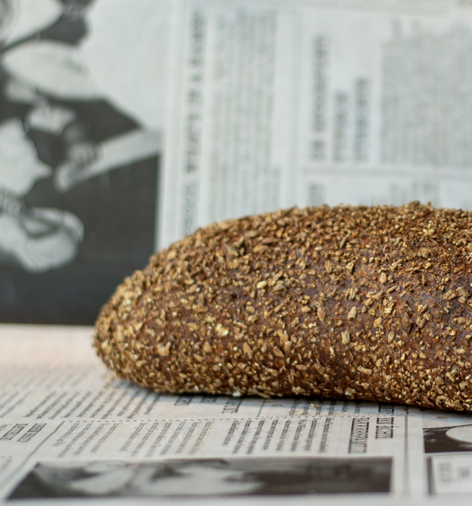
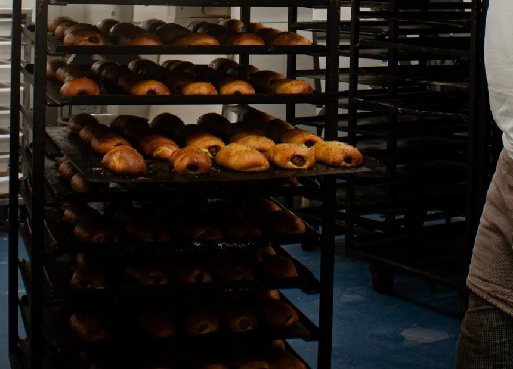
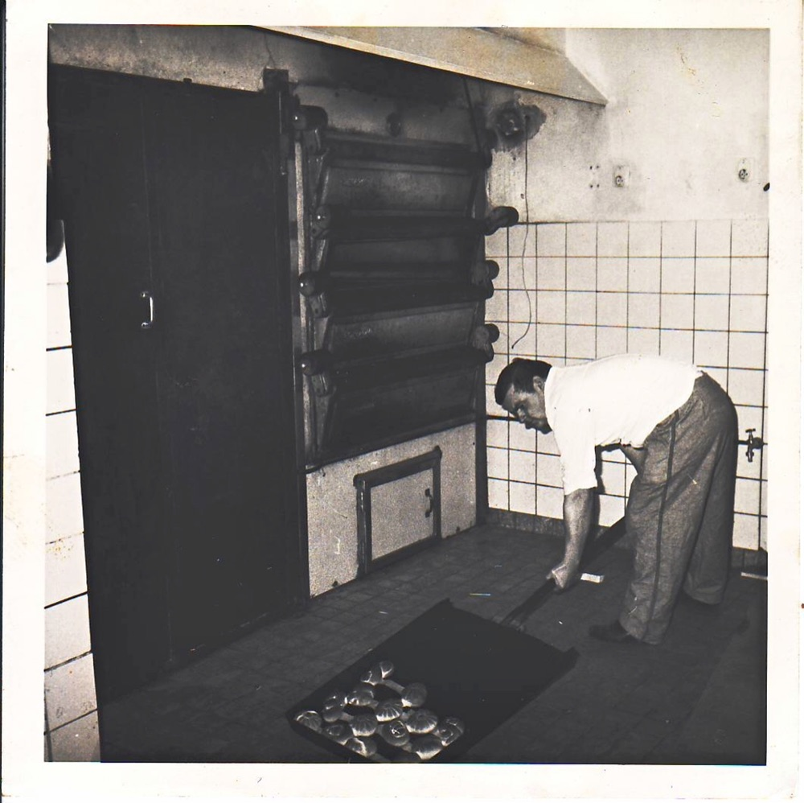
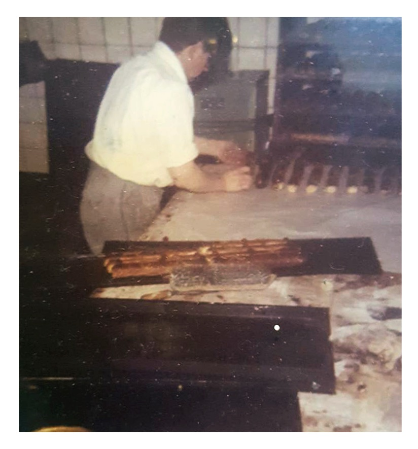
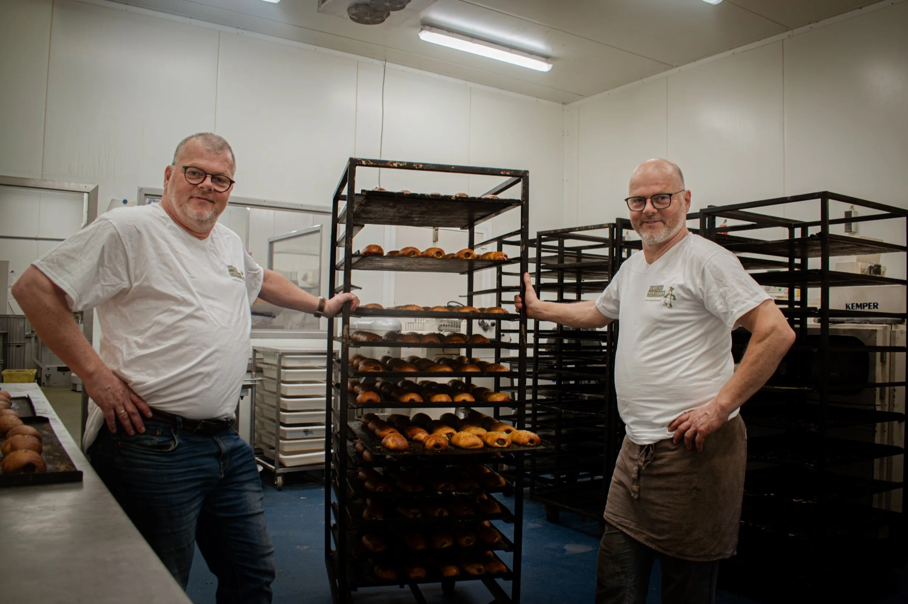
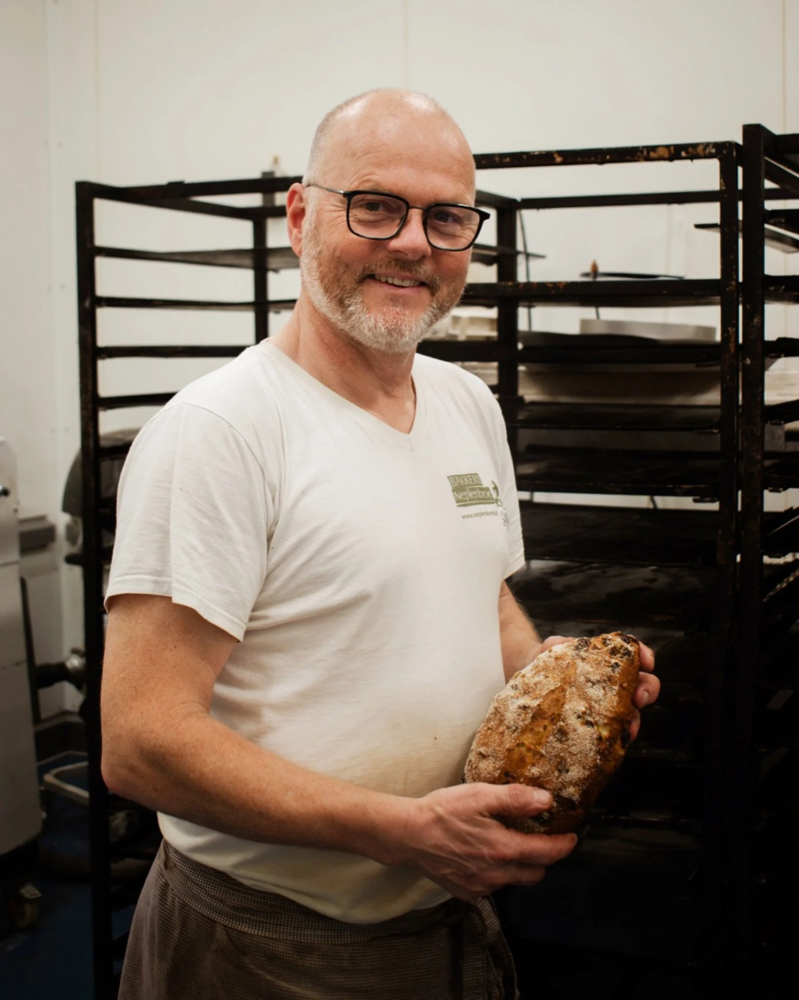
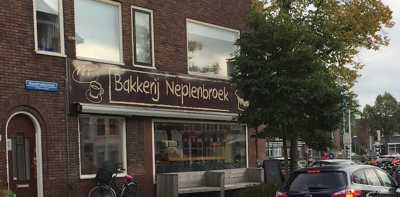

Bakkerij in Utrecht
Al sinds 1963 brood op de plank.
Rustiek desembrood, zoete lekkernijen en warme snacks van een écht familiebedrijf. Gewoon bij jou om de hoek, van maandag tot en met zaterdag.
4,5 sterren uit 121 Google-reviews

Maandag t/m zaterdag
8:00 tot 15:00
Op zondag zijn we dicht.
Hasebroekstraat 1
Utrecht
Van rustiek desembrood tot zoete lekkernijen en warme snacks.

Desembrood
Ons ambachtelijke desembrood is makkelijk verteerbaar en vol smaak. Perfect voor elke dag, bij de brunch of aan de borrel.
Zoet
Gebak, koeken en andere zoete lekkernijen. En met Pasen staat het traditionele paasbrood klaar.
Hartig
Warme snacks voor tussendoor. Vraag ook eens naar het Broodje Utreg.

Een écht familiebedrijf
-
1963
Vader en moeder Neplenbroek ruilen Zwolle in voor Utrecht. In Zwolle was het nog gewoon om langs de deuren te venten, maar dat wilden zij niet. Zij droomden van een winkel waar mensen naartoe kwamen vanwege de sfeer en de kwaliteit.
-
2023
In juni is het precies 60 jaar later. Traditie en vernieuwing gaan al die tijd hand in hand.
-
Nu
Het zijn niet meer vader en moeder, maar de tweelingbroers Ron en Marchel die met hart voor de zaak het brood op de plank brengen.



“Al jaren klant. Hoe lang weet ik niet eens meer. Heerlijk brood. Lekker gebak en koeken. Leuke mensen die er werken. Ik ben blij dat we deze bakker in de buurt hebben.”
“Fijne bakkerij, mooi assortiment en inderdaad, altijd zeer vriendelijk personeel.”
4,5 sterren uit 121 reviews

Hoe word je bakker?
Bij ons, bijvoorbeeld. Bakken is een ambachtelijk en toekomstbestendig beroep. Wil je weten of er plek is in de bakkerij of in de winkel? Stuur ons een mail.

Openingstijden
- Maandag
- 8:00 tot 15:00
- Dinsdag
- 8:00 tot 15:00
- Woensdag
- 8:00 tot 15:00
- Donderdag
- 8:00 tot 15:00
- Vrijdag
- 8:00 tot 15:00
- Zaterdag
- 8:00 tot 15:00
- Zondag
- Gesloten